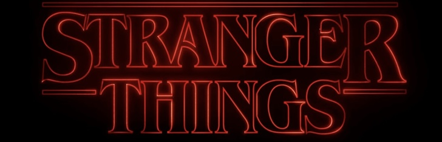

|
 Navigation | Hauptseite | Cast | Folgen | Merchandise |
||
|
Staffel 1:
Auf seinem Weg nach Hause von einem Freund beobachtet Will eine schreckliche Szene. Ein Regierungslabor in der Nähe hütet ein dunkles Geheimnis. IMDb: 8,6/10 Dauer: 49min Lucas, Mike und Dustin versuchen, mit dem Mädchen aus dem Wald zu sprechen. Joyce ist verängstigt und wird von Hopper zu einem beunruhigenden Telefonanruf befragt. IMDb: 8,3/10 Dauer: 56min Die zunehmend besorgte Nancy sucht Barb und kommt Jonathan auf die Schliche. Joyce ist überzeugt, dass Will versucht, Kontakt mit ihr aufzunehmen. IMDb: 8,8/10 Dauer: 52min Joyce weigert sich, an Wills Tod zu glauben. Die Jungs unterziehen Elf einer Verwandlung, und Nancy und Jonathan schließen ein überraschendes Bündnis. IMDb: 8,9/10 Dauer: 51min Während Hopper in das Labor einbricht, stellen sich Nancy und Jonathan der bösen Macht. Die Jungs möchten von Mr. Clarke wissen, wie man in eine andere Dimension reist. IMDb: 8,6/10 Dauer: 53min Jonathan sucht in der Dunkelheit verzweifelt nach Nancy, doch auch Steve will sie finden. Hopper und Joyce entdecken die Wahrheit über die Laborexperimente. IMDb: 8,6/10 Dauer: 47min Elf hat Schwierigkeiten, Will zu erreichen. Lucas warnt derweil vor dem Eintreffen der bösen Männer. Nancy und Jonathan zeigen der Polizei Jonathans Videoaufnahmen. IMDb: 9/10 Dauer: 43min Dr. Brenner hält Hopper und Joyce zu einem Verhör fest. Die Jungs und Elf warten. Im Haus von Will rüsten sich Nancy und Jonathan für den bevorstehenden Kampf. IMDb: 9,3/10 Dauer: 58min Staffel 2:
Während sich die Stadt auf Halloween vorbereitet, sorgt ein Videospielrekord für Aufruhr. Hopper ist skeptisch und inspiziert ein Feld faulender Kürbisse. IMDb: 8,1/10 Dauer: 49min Nach Wills schrecklicher Entdeckung am Halloween-Abend überlegt Mike, ob Elf noch da draußen ist. Nancy hat mit der Wahrheit über Barb zu kämpfen. IMDb: 8,2/10 Dauer: 56min Dustin adoptiert ein merkwürdiges neues Haustier und Elf wird zunehmend ungeduldig. Bob ermutigt Will dazu, sich seinen Ängsten zu stellen. IMDb: 8,5/10 Dauer: 51min Will vertraut sich Joyce an - mit beunruhigenden Folgen. Während Hopper nach der Wahrheit sucht, macht Elf eine überraschende Entdeckung. IMDb: 8,5/10 Dauer: 47min Nancy und Jonathan tauschen Verschwörungstheorien aus. Elf sucht indes nach jemandem aus ihrer Vergangenheit. Superhirn Bob löst ein schwieriges Problem. IMDb: 8,7/10 Dauer: 59min Wills Verbindung mit der dubiosen bösen Kraft wird stärker. Jedoch weiß niemand so recht, wie sie zu stoppen ist. Dustin und Steve kommen sich überraschend näher. IMDb: 9,1/10 Dauer: 52min Visionen treiben Elf zu einer Clique gewalttätiger Ausgestoßener und einem wütenden Mädchen mit dubioser Vergangenheit. IMDb: 6/10 Dauer: 46min Will und weitere Personen sind im Labor von Hawkins gefangen, da es infolge tödlicher Ereignisse unter Quarantäne gestellt wird. IMDb: 9,2/10 Dauer: 48min Elf will das beenden, was sie angefangen hat. Die Überlebenden erhöhen derweil den Druck auf die monströse Gewalt, die Will als Geisel hält. IMDb: 9,3/10 Dauer: 63min Staffel 3:
Der Sommer hat neue Jobs und eine aufkeimende Romanze zu bieten. Doch als Dustins Radio einen russischen Sender empfängt und Will Lunte riecht, kippt die Stimmung. IMDb: 7,8/10 Dauer: 51min Nancy und Jonathan folgen einer Spur. Steve und Robin treten einer geheimen Mission bei. Max und Elfi gehen shoppen. Billy hat nach einem Vorfall verstörende Visionen. IMDb: 7,9/10 Dauer: 51min Elfi und Max suchen Billy, doch Will erklärt den Tag zur mädchenfreien Zeit. Steve und Dustin legen sich auf die Lauer. Joyce und Hopper kehren ins Labor zurück. IMDb: 8,2/10 Dauer: 50min Alarmstufe Rot führt die Clique im Kampf gegen eine bekannte Gefahr wieder zusammen. Karen ermutigt Nancy dazu, nicht aufzugeben. Robin entdeckt eine hilfreiche Karte. IMDb: 8,9/10 Dauer: 53min In einem alten Bauernhaus und tief unter der Starcourt Mall lauern kuriose Überraschungen. Der Mind Flayer kommt indes so richtig in Fahrt. IMDb: 8,5/10 Dauer: 52min Dr. Alexei enthüllt das Projekt der Russen. Elfi kommt Billy auf die Spur. Dustin und Erica stellen eine gewagte Rettungsmission auf die Beine. IMDb: 8,5/10 Dauer: 60min Die Zeit drängt und ein Killer ist ihnen dicht auf den Fersen. Hoppers Team eilt nach Hawkins zurück, wo sich Elfi und die Kids für den Kampf rüsten. IMDb: 8,7/10 Dauer: 56min Der Mind Flayer versetzt das Einkaufszentrum in Angst und Schrecken. Tief unten in der Finsternis steht das Schicksal der Welt auf dem Spiel. IMDb: 9,3/10 Dauer: 76min Staffel 4:
Elfie wird in der Schule gehänselt und kann sich nicht wehren. Joyce öffnet ein mysteriöses Paket. In Hawkins mischt eine schlagfertige Spielerin bei D&D mit. IMDb: 8,1/10 Dauer: 78min Mike reist nach Kalifornien, während eine Leiche in Hawkins für Aufsehen sorgt. Nancy sucht nach Hinweisen und Eddie berichtet der Gang von seiner Beobachtung. IMDb: 8,1/10 Dauer: 78min Murray und Joyce fliegen nach Alaska und Elfie drohen ernste Folgen. Robin und Nancy nehmen Hawkins' Dämonen unter die Lupe, während Dr. Owens schlechte Nachrichten hat. IMDb: 8,3/10 Dauer: 65min Max befindet sich in großer Gefahr und ihr läuft die Zeit davon. Ein Patient der Nervenheilanstalt Pennhurst bekommt Besuch und Hopper ist in Russland schwer beschäftigt. IMDb: 9,5/10 Dauer: 79min Owens nimmt Elfi mit nach Nevada, wo sie mit ihrer Vergangenheit konfrontiert wird. Die Hawkins-Kids durchsuchen ein Haus. Vecna fordert ein weiteres Opfer. IMDb: 8,1/10 Dauer: 77min Hinter dem Eisernen Vorhang ereignet sich eine riskante Rettungsmission. Die Kalifornien-Crew bittet eine Hackerin um Hilfe. Steve erbringt ein großes Opfer für das Team. IMDb: 8,5/10 Dauer: 75min Während Hopper sich für den Kampf mit einem Monster rüstet, analysiert Dustin Vecnas Absichten und entschlüsselt eine Botschaft. Eine Erinnerung gibt Elfi Kraft. IMDb: 9,6/10 Dauer: 101min Nancy hat ernüchternde Visionen und El besteht einen wichtigen Test. In Hawkins besorgt sich die Clique die nötigen Ausrüstungsgegenstände und rüstet sich für den Kampf. IMDb: 8,7/10 Dauer: 87min Mit Selbstlosigkeit und dem Klang klirrenden Metalls kämpfen Helden aus allen Ecken des Schlachtfeldes um das Überleben von Hawkins und der Welt. IMDb: 9,2/10 Dauer: 142min Staffel 5:
November 1987: Die Gruppe entkommt dem Militär, um auf der anderen Seite nach Vecna zu suchen, bemerkt dabei jedoch nicht die Gefahr in unmittelbarer Nähe. IMDb: 7,8/10 Dauer: 71min Nach einem brutalen Angriff im Haus der Wheelers leiden Mike und Nancy unter Schuldgefühlen. Elfi und Hopper starten unterdessen eine Rettungsmission. IMDb: 8,3/10 Dauer: 57min Da Will in der Lage ist, Vecnas nächsten Schritte zu erahnen, ergibt sich der Gruppe die Möglichkeit, ihm eine Falle zu stellen. Holly erkundet ihre neue Umgebung. IMDb: 8,4/10 Dauer: 69min Während das Militär drastischere Maßnahmen ergreift, planen Mike, Lucas und Robin eine waghalsige Flucht. Elfi blickt ihrem gegnerischen Gegenüber ins Auge. IMDb: 9,3/10 Dauer: 86min Die Gruppe schmiedet einen Plan, um Will wieder mit dem Schwarmbewusstsein zu verbinden. Bei der Durchsuchung des Hawkins Lab auf der anderen Seite treten Spannungen auf. IMDb: 7,8/10 Dauer: 68min Holly und Max versuchen, Vecnas Geist zu entkommen. Joyce ringt mit Schuldgefühlen. Jonathan und Nancy stehen vor einem Wendepunkt. IMDb: 7,9/10 Dauer: 75min Am Jahrestag von Wills Verschwinden versammelt sich die Gruppe erneut, um sich auf einen Kampf vorzubereiten, der die Welt verändern wird. IMDb: 5,6/10 Dauer: 66min Als Vecna kurz davor steht, die Welt zu zerstören, muss die Gruppe alles aufs Spiel setzen, um ihn ein für alle Mal zu besiegen. IMDb: 7,5/10 Dauer: 128min |
||